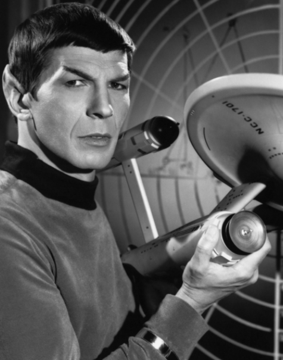
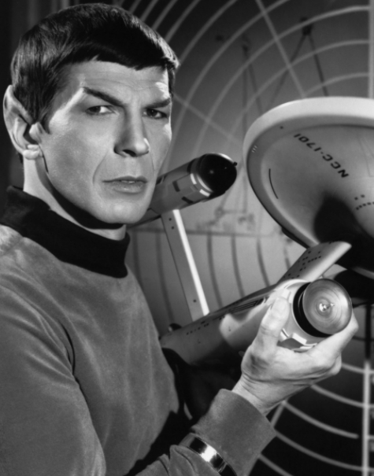

Leonard Nimoy
como: Spock

1931 - 2015
Leonard Nimoy foi ator, autor, diretor, cantor e fotógrafo. Seu papel mais conhecido foi o de Spock na franquia Star Trek. O personagem é um oficial de frota estelar, meio vulcano e meio humano. Juntamente com James Kirk e a tripulação da USS Enterprise, eles exploram os confins do espaço. Leonard interpretou Spock de 1964, em Star Trek: The Original Series até 2013 no recente filme de reinicialização, Star Trek Into Darkness.

 
